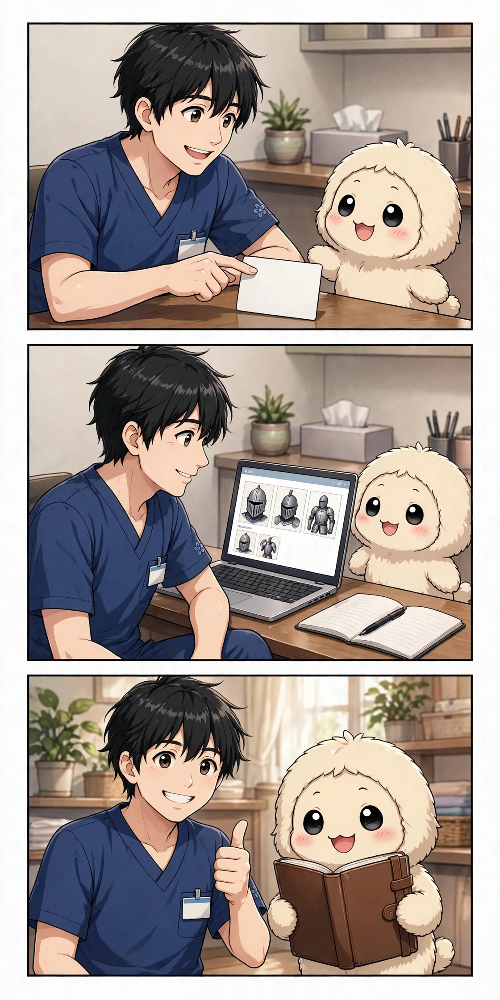
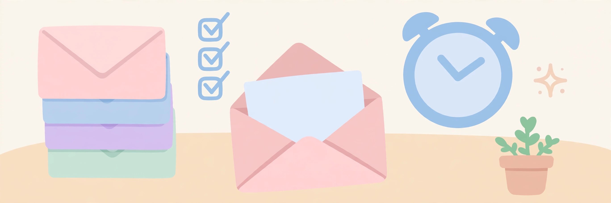
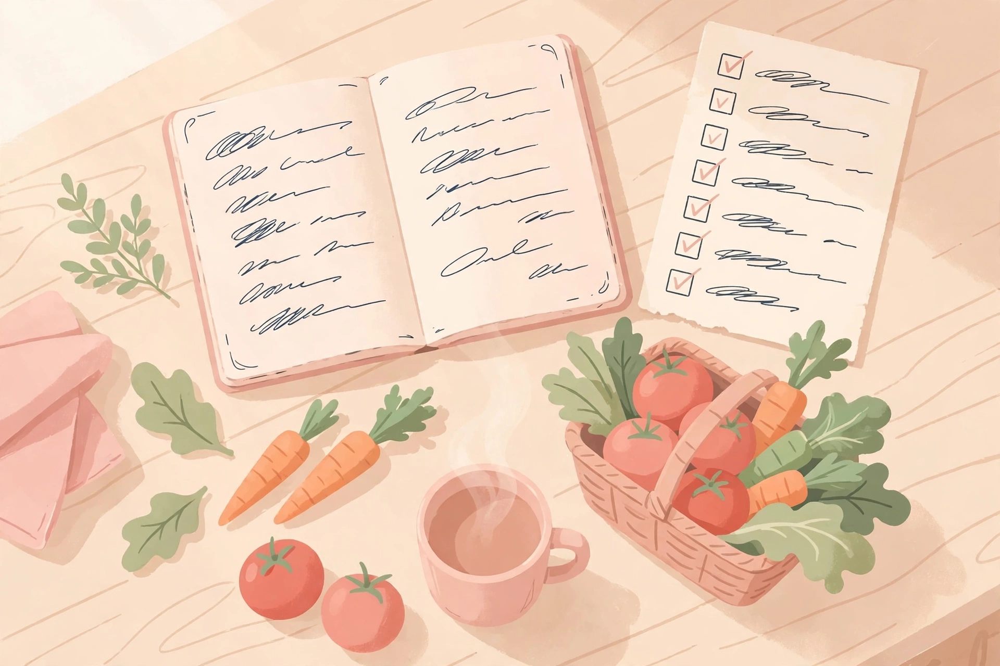
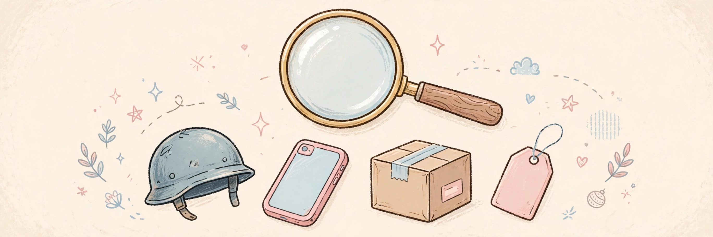

AI活用の実例と使い方 ― MUSE活用ラボ
ドジで可愛いAIアシスタント「みゅう」が、個人向けAIアシスタント「Muse」の使い方を、実際の暮らしの実例で紹介するまとめページです。初心者向けの頼み方から、キャラ変身で紹介する中級〜上級の仕組み化まで、毎日のリール連載「みゅうのドジ日記」と合わせて発信しています。
初めての使い方を見る（無料）みゅうとひふみんの実録手帳

連載 第1話はじめまして、Museです
2026年10月23日、名前が「Muse」に決まった日。鎧探しとサロンの予約、そして「先回りして提案して」という約束。MUSEとの15日間の始まりを、みゅうが語ります。
第1話を読む毎日の記事 ― MUSEの活用法

2026年11月10日AIにメールの仕分けと返信の下書きを任せると、朝がこう変わる
毎朝届くメールの要約、返信が必要なメールの選び方、下書きの頼み方と送る前の確認。秘書みゅうの実例で紹介します。
記事を読む
2026年11月10日AIに献立を任せると、毎日の買い物がこう変わる
毎朝届く献立提案、冷蔵庫の残り物からの献立、献立とセットの買い物リスト。暮らしの実例で紹介します。
記事を読む
2026年11月11日AIに探しものの見張りを任せると、欲しい中古がこう見つかる
条件に合う新しい出品だけを受け取る、探偵みゅうの見張りの仕組み。値下げ通知との組み合わせも紹介します。
記事を読むまずはこちらから
キャラ変（変身）で紹介する上級の使い方

Museの始め方（3ステップ）
1. Instagramの固定投稿で、招待コードの入力場所を確認する
2. 招待コード 1908NH を入力して始める
3. 毎日のリールとこのサイトの実例ページで、頼み方のコツをつかむ
毎日のリール連載「みゅうのドジ日記」は Day3 まで公開中／Instagramの投稿は 19件（2026年11月3日時点）
Dayは毎日増えます。今日の分は Instagramの最新リール へ
Dayは毎日増えます。今日の分は Instagramの最新リール へ
このページについて
MUSE活用ラボは、AIアシスタントの使い方を「個人の暮らしがどう変わるか」という実例で伝えるアカウントです。効果をうたう表現はせず、実際に試したこと、測れたことだけを紹介しています。毎日の投稿はInstagramとThreadsでご覧いただけます。